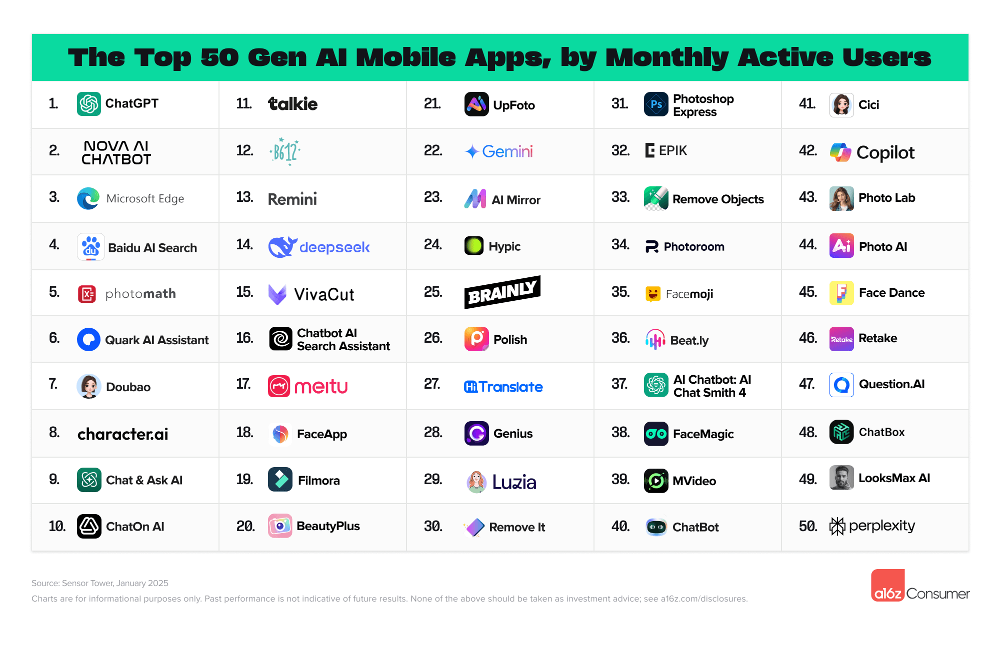

Plataformas y herramientas de IA
|
Generación de imágenes y vídeo
|
Aprender sobre IA
|
Noticias e investigación
|
IA para programar
Además, empresas como Google DeepMind trabajan en modelos avanzados como Gemini, Veo o AlphaFold para investigación científica y generación multimodal. |
 |